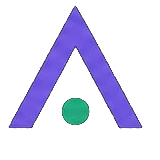

Optimización para Motores Generativos (GEO) B2B
Logramos que la IA cite y recomiende a tu empresa cuando tus clientes preguntan — no solo que aparezcas en una lista de enlaces.
Los clientes dejaron de buscar en Google. Ahora preguntan.
de las marcas no rastrea su visibilidad en IA de forma sistemática
de aumento anual en tráfico web referido por IA (2025)
mayor tasa de conversión de visitantes referidos por IA vs. búsqueda orgánica
de los compradores B2B ya usa IA en su proceso de compra
El SEO te posiciona. Con GEO, la IA te cita.
Optimización para Motores Generativos (GEO)
La práctica de optimizar tu sitio, tu contenido y tu huella digital para que los motores de IA (ChatGPT, Claude, Gemini) reconozcan, enlacen y recomienden tu marca dentro de sus respuestas.
En la práctica: cuando tu cliente ideal le pregunta a una IA a qué proveedor recurrir, tu empresa es la respuesta — no la competencia.
Verificación manual de citas
Le hacemos a ChatGPT, Claude y Gemini las preguntas clave de tu sector y guardamos las respuestas.
Share of Model (SoM)
Con qué frecuencia aparece tu marca frente a competidores concretos, y su evolución.
Tráfico referido por IA
Aparece como una fuente de referencia distinta en Google Analytics.
Línea base antes / después
Hacemos las mismas preguntas antes y después de optimizar, y comparamos los resultados.
Un ciclo continuo, no un proyecto puntual.
La visibilidad en IA cambia sola; por eso medimos, actuamos y volvemos a medir.
1 · Diagnóstico
Auditamos tu visibilidad actual en los motores de IA y fijamos la línea base en cuatro dimensiones.
2 · Acción
Ejecutamos las mejoras: optimización técnica del sitio, contenido citable y sindicación.
3 · Monitoreo
La plataforma mide de forma continua y detecta cuándo actuar de nuevo.
Las cuatro dimensiones que medimos en tu punto de partida.
Visibilidad
¿Te ven los motores de IA?- Frecuencia de citas en respuestas de IA
- Tasa de mención de marca (con o sin enlace)
- Cobertura de las preguntas clave de tu sector
- Posición de la cita en la respuesta
Competitividad
¿Cómo te comparas?- Share of Voice (SoV) vs. competidores
- Diferencia de citas frente al líder
- Posición por grupo de temas
- Temas que dominas frente a los que no apareces
Calidad y Confianza
¿Te describen bien?- Sentimiento: positivo / neutral / negativo
- Precisión de datos, servicios y ubicación
- Desglose por motor: ChatGPT, Claude, Gemini
Impacto de Negocio
¿Genera resultado?- Tráfico referido por IA (canal GA4)
- Conversión de visitantes referidos por IA
- Aumento de búsquedas directas de tu marca
- B2B: RFQs / leads calificados atribuidos a IA
Tres frentes para ganar visibilidad.
1 · Optimización de Sitio Web
- Schema markup completo (WebSite, Product, FAQ, LocalBusiness)
- Corrección de noindex, autoría y meta descripciones
- Reescritura de páginas clave con datos específicos
- Resumen citable para la IA en la página de inicio
2 · Contenido y Artículos
- Artículos y publicaciones optimizadas para ser citadas
- Definiciones claras y respaldadas con datos
- Encabezados en forma de pregunta
- Basados en las preguntas reales de tus clientes
3 · Sindicación y Distribución
- Directorios y perfiles de negocio (GBP)
- Guest posts, prensa y podcasts
- Bios y link-in-bio en redes
- Construcción de citas externas de autoridad
La plataforma que convierte el diagnóstico en monitoreo.
La auditoría es una foto del momento. La plataforma la mantiene viva: mide las mismas cuatro dimensiones de forma continua, para que la visibilidad en IA sea un indicador más que puedas seguir.
Monitoreo continuo
Lanzamos tus preguntas clave en ChatGPT, Claude y Gemini de forma periódica, sin trabajo para tu equipo.
Evolución en el tiempo
Observa cómo evolucionan tus cuatro dimensiones semana a semana y detecta cuándo subes o bajas frente a competidores.
Alertas y reportes
Recibe un aviso cuando tu visibilidad cambia y un informe periódico frente a tu línea base inicial.